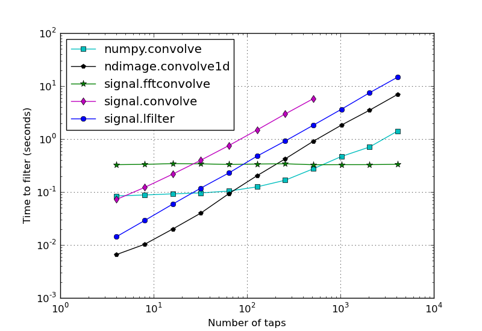

The following plot shows the time required to apply a finite impulse response (FIR) filter of varying length to a signal of length 131072 using several different functions that are available in numpy and scipy. The details of how this figure was created are given below.
There are several functions in the numpy and scipy libraries that can be used to apply a FIR filter to a signal. From scipy.signal, lfilter() is designed to apply a discrete IIR filter to a signal, so by simply setting the array of denominator coefficients to [1.0], it can be used to apply a FIR filter. Applying a FIR filter is equivalent to a discrete convolution, so one can also use convolve() from numpy, convolve() or fftconvolve() from scipy.signal, or convolve1d() from scipy.ndimage. In this page, we demonstrate each of these functions, and we look at how the computational time varies when the data signal size is fixed and the FIR filter length is varied. We’ll use a data signal length of 131072, which is 2**17. We assume that we have m channels of data, so our input signal is an m by n array.
We assume our FIR filter coefficients are in a one-dimensional array b. The function numpy.convolve only accepts one-dimensional arrays, so we’ll have to use a python loop over our input array to perform the convolution over all the channels. One way to do that is
np.array([np.convolve(xi, b, mode='valid') for xi in x])
We use a list comprehension to loop over the rows of x, and pass the result to np.array to reassemble the filtered data into a two-dimensional array.
Both signal.convolve and signal.fftconvolve perform a two-dimensional convolution of two-dimensional arrays. To filter our m by n array with either of these functions, we shape our filter to be a two-dimensional array, with shape 1 by len(b). The python code looks like this:
y = convolve(x, b[np.newaxis, :], mode='valid')
where x is a numpy array with shape (m, n), and b is the one-dimensional array of FIR filter coefficients. b[np.newaxis, :] is the two dimensional view of b, with shape 1 by len(b). y is the filtered data; it includes only those terms for which the full convolution was computed, so it has shape (m, n - len(b) + 1).
ndimage.convolve1d() is designed to do a convolution of a 1d array along the given axis of another n-dimensional array. It does not have the option mode=’valid’, so to extract the valid part of the result, we slice the result of the function:
y = convolve1d(x, b)[:, (len(b)-1)//2 : -(len(b)//2)]
signal.lfilter is designed to filter one-dimensional data. It can take a two-dimensional array (or, in general, an n-dimensional array) and filter the data in any given axis. It can also be used for IIR filters, so in our case, we’ll pass in [1.0] for the denominator coefficients. In python, this looks like:
y = lfilter(b, [1.0], x)
To obtain exactly the same array as computed by convolve or fftconvolve (i.e. to get the equivalent of the ‘valid’ mode), we must discard the beginning of the array computed by lfilter. We can do this by slicing the array immediately after the call to filter:
y = lfilter(b, [1.0], x)[:, len(b) - 1:]
The following script computes and plots the results of applying a FIR filter to a 2 by 131072 array of data, with a series of FIR filters of increasing length.
#!python
import time
import numpy as np
from numpy import convolve as np_convolve
from scipy.signal import convolve as sig_convolve, fftconvolve, lfilter, firwin
from scipy.ndimage import convolve1d
from pylab import grid, show, legend, loglog, xlabel, ylabel, figure
# Create the m by n data to be filtered.
m = 4
n = 2 ** 17
x = np.random.random(size=(m, n))
conv_time = []
npconv_time = []
fftconv_time = []
conv1d_time = []
lfilt_time = []
diff_list = []
diff2_list = []
diff3_list = []
ntaps_list = 2 ** np.arange(2, 13)
for ntaps in ntaps_list:
# Create a FIR filter.
b = firwin(ntaps, [0.05, 0.95], width=0.05, pass_zero=False)
if ntaps <= 2 ** 9:
# --- signal.convolve ---
# We know this is slower than the others when ntaps is
# large, so we only compute it for small values.
tstart = time.time()
conv_result = sig_convolve(x, b[np.newaxis, :], mode='valid')
conv_time.append(time.time() - tstart)
# --- numpy.convolve ---
tstart = time.time()
npconv_result = np.array([np_convolve(xi, b, mode='valid') for xi in x])
npconv_time.append(time.time() - tstart)
# --- signal.fftconvolve ---
tstart = time.time()
fftconv_result = fftconvolve(x, b[np.newaxis, :], mode='valid')
fftconv_time.append(time.time() - tstart)
# --- convolve1d ---
tstart = time.time()
# convolve1d doesn't have a 'valid' mode, so we expliclity slice out
# the valid part of the result.
conv1d_result = convolve1d(x, b)[:, (len(b)-1)//2 : -(len(b)//2)]
conv1d_time.append(time.time() - tstart)
# --- lfilter ---
tstart = time.time()
lfilt_result = lfilter(b, [1.0], x)[:, len(b) - 1:]
lfilt_time.append(time.time() - tstart)
diff = np.abs(fftconv_result - lfilt_result).max()
diff_list.append(diff)
diff2 = np.abs(conv1d_result - lfilt_result).max()
diff2_list.append(diff2)
diff3 = np.abs(npconv_result - lfilt_result).max()
diff3_list.append(diff3)
# Verify that np.convolve and lfilter gave the same results.
print "Did np.convolve and lfilter produce the same results?",
check = all(diff < 1e-13 for diff in diff3_list)
if check:
print "Yes."
else:
print "No! Something went wrong."
# Verify that fftconvolve and lfilter gave the same results.
print "Did fftconvolve and lfilter produce the same results?",
check = all(diff < 1e-13 for diff in diff_list)
if check:
print "Yes."
else:
print "No! Something went wrong."
# Verify that convolve1d and lfilter gave the same results.
print "Did convolve1d and lfilter produce the same results?",
check = all(diff2 < 1e-13 for diff2 in diff2_list)
if check:
print "Yes."
else:
print "No! Something went wrong."
figure(1, figsize=(8, 5.5))
loglog(ntaps_list, npconv_time, 'c-s', label='numpy.convolve')
loglog(ntaps_list, conv1d_time, 'k-p', label='ndimage.convolve1d')
loglog(ntaps_list, fftconv_time, 'g-*', markersize=8, label='signal.fftconvolve'
)
loglog(ntaps_list[:len(conv_time)], conv_time, 'm-d', label='signal.convolve')
loglog(ntaps_list, lfilt_time, 'b-o', label='signal.lfilter')
legend(loc='best', numpoints=1)
grid(True)
xlabel('Number of taps')
ylabel('Time to filter (seconds)')
show()
The plot shows that, depending on the number of taps, either scipy.ndimage.convolve1d, numpy.convolve or scipy.signal.fftconvolve is the fastest. The above script can be used to explore variations of these results.